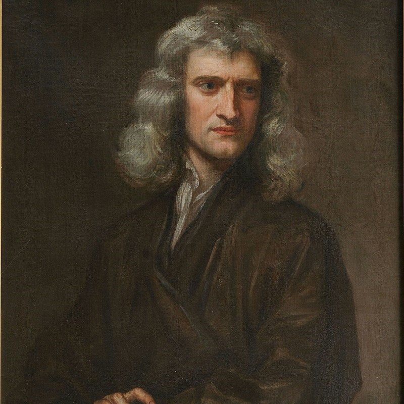
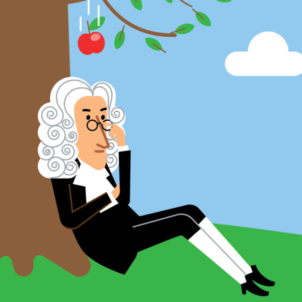

Isaac Newton was a physicist, mathematician and astronomer who made major contributions to many fields of science and math and was a major figure in the 17th century's scientific revolution. He made contributions to the field of optics, by discovering that white light is composed of a spectrum of light from red all the way to blue light. He split white light into its component rays of light by a prism. He invented Classical or Newtonian mechanics, he created his three laws of motion which is the most fundamental principle of physics (you will learn a lot more about that later), and he formulated the law of universal gravitation.
Regarding mathematics, he discoverered infinitesimal calculus and is considered one of the cocreators of calculus (which he called fluxions) along with Gottfried Wilhelm Leibniz. He created calculus by first discovering the binomial theorem using Pascal's triangle to find a far more efficient way to find the exact digits of Pi that made the old way of taking two polygons and putting a circle in between to calculate Pi obsolete. Newton authored the book "Philosophiae Naturalis Principia Mathematica (Mathematical Principles of Natural Philosophy, 1687)" which was one of the single most important works in the history of modern science or mathematics.
In astronomy, he wrote "Philosophiæ Naturalis Principia Mathematica" a book in which he wrote about Newton's 3 laws and the law of universal gravitation which was one of the greatest discoveries in science to date. It gave us a comprehensive understanding of why apples fall from trees, why we don't just fly off into space and why planets and other celestial bodies have the trajectories that they have.